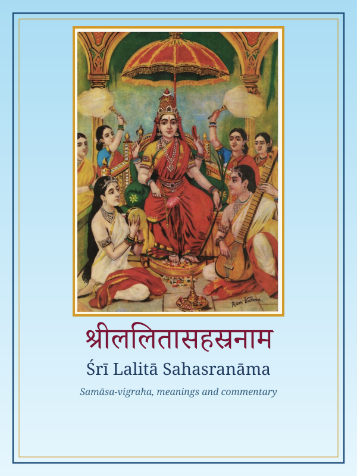

Contents
- About this Editionflipbook
- Section 1. Names 1–100नामानि १–१००flipbook
- Section 2. Names 101–200नामानि १०१–२००flipbook
- Section 3. Names 201–300नामानि २०१–३००flipbook
- Section 4. Names 301–400नामानि ३०१–४००flipbook
- Section 5. Names 401–500नामानि ४०१–५००flipbook
- Section 6. Names 501–600नामानि ५०१–६००flipbook
- Section 7. Names 601–700नामानि ६०१–७००flipbook
- Section 8. Names 701–800नामानि ७०१–८००flipbook
- Section 9. Names 801–900नामानि ८०१–९००flipbook
- Section 10. Names 901–1000नामानि ९०१–१०००flipbook
- Index of Namesflipbook